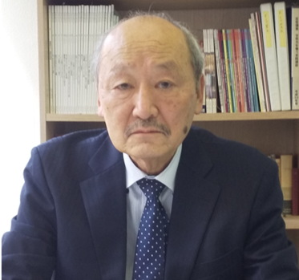
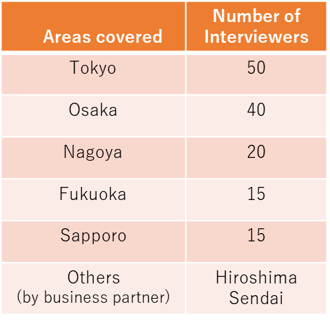

日本における消費者調査・フィールドワーク
株式会社ジャパンリサーチコンサルタント（JRC）は、日本国内および海外のお客様に向けて、消費者調査、対象者リクルーティング、フィールドワークを提供する独立系マーケティングリサーチ会社です。
JRCについて
1981年設立の独立系リサーチ会社
JRCは1981年に青山 浩によって設立され、以来、日本でマーケティングリサーチサービスを提供してきました。主な分野は消費者調査で、日本語・英語の両方でプロジェクトに対応しています。
主なフィールドワークの対応エリアは首都圏です。その他の地域でのプロジェクトについては、調査地域、対象者、プロジェクトの要件に応じて、フリーランスのリクルーター、インタビュアーおよび各地域のリサーチパートナーと連携して対応しています。

青山 浩
創業者・代表取締役
株式会社ジャパンリサーチコンサルタント
調査サービス
プロジェクトに応じた柔軟な対応
プロジェクトの要件に応じて、調査工程の一部のみのご依頼から複数工程の一括対応まで柔軟にサポートします。
定性調査
対象者リクルーティング、スケジュール調整、フィールドワーク運営、インタビュー実施などに対応します。
消費者・製品テスト
化粧品、美容・パーソナルケア、食品、飲料など、消費財分野の調査に豊富な経験があります。
リクルーティング・フィールドワーク
経験豊富なフリーランスのリクルーター、インタビュアーとのネットワークを活用し、対象者や調査地域に応じて調査体制を組みます。
リサーチサポート
JRCが実施するプロジェクトでは、自由回答のコーディング、データ分析、レポート作成まで対応可能です。また、調査資料やプロジェクト関連文書の日英翻訳は、単独のサービスとしても承ります。
日本での調査サポート
海外プロジェクトの現地対応
JRCは、日本で消費者調査を実施する海外のリサーチ会社やクライアントをサポートしています。対象者リクルーティング、フィールドワークの準備・運営、インタビュー、製品テストなどに対応し、英語でのプロジェクトコミュニケーションも可能です。
主な調査地域は首都圏ですが、必要に応じてネットワークを活用し、その他の地域にも対応します。

対応地域・体制は、プロジェクトの要件および各地域の状況に応じて調整します。
主な経験分野
主な消費者分野
一般消費者に加え、美容関連の専門職を対象とした調査経験もあります。
会社概要・お問い合わせ
株式会社ジャパンリサーチコンサルタント
Japan Research Consultants Co., Ltd.
- 代表者青山 浩
- 設立1981年
- 所在地〒114-0002 東京都北区王子5-5-3 シーメゾン王子神谷502
- 電話03-6381-9505
- FAX03-6381-9506
- Emailhiroaoyama@jrccl.com
irina@jrccl.com